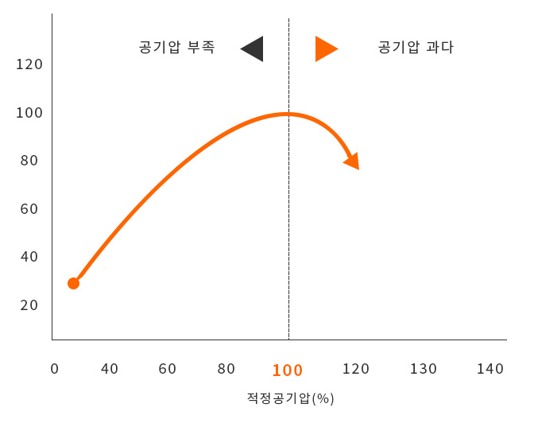
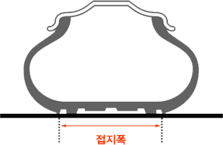
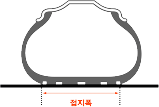
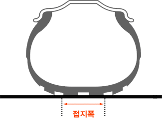
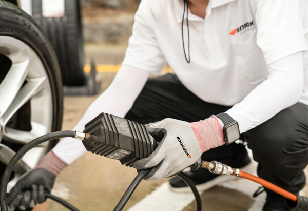
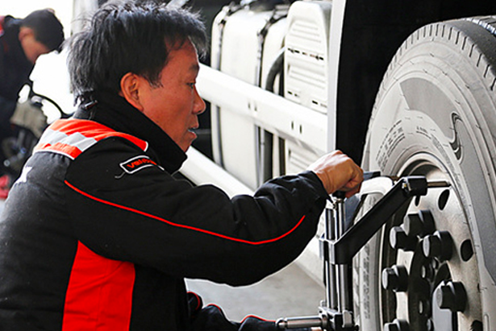

타이어점검
타이어의 공기압은 안전과 직결된 사항으로 주기적인 체크가 필요하며, 적절한 공기압 관리는 타이어의 수명까지 연장시킵니다.

“월 1회 공기압 점검을 권장합니다.”
공기압이 과다하거나 부족하면 트레트 접지면이 고르지 않아 이상 마모 현상이 발생합니다. 이는 타이어 수명을 단축시키고, 때로는 대형사고의 원인이 될 수 있으므로 반드시 적정 공기압을 유지해야 합니다.
타이어 공기압 상태
-

- 공기압이 지나치게 낮은 타이어
- 적정한 공기압보다 사이드윌의 기울어짐이 크며, 과다한 열로 손상을 일으키고 불규칙한 마모의 원인이 됩니다.
-

- 공기압이 적정한 타이어
- 도로와 완전한 접촉을 하여 최대의 견인력 및 제동력을 발휘하며, 부위별 마모를 균일하게 하여 타이어 수명을 연장합니다.
-

- 공기압이 지나치게 높은 타이어
- 풍선처럼 부풀어 오른 타이어의 모양 때문에 중앙에만 집중적으로 힘이 가해집니다. 외부 충격에 약하며, 불규칙한 마오의 원인이 됩니다.
공기압 점검 방법
- 01검증된 공기압 측정기를 구매하거나 가까운 정비소 또는 주유소에서 점검합니다.
- 02타이어가 식은 상태(주행 후 최소 3시간 이후)에서 측정해야 합니다.
- 03밸브에 공기압 측정기를 삽입하고, 차량 문에 부착된 공기압 수치와 측정된 수치를 비교
무상점검
안전한 드라이빙을 위해 전문가들로 구성된 무상점검팀이 직접 찾아가는 서비스를 제공합니다.
-

- 찾아가는 무상점검 서비스
- 타이어 정비불량으로 인한 위험으로부터 고객의 안전을 지키기 위해, 타이어 및 자동차 정비전문가로 구성된 한국타이어 무상 안전점검 팀은 고객의 차량이 있는 주거지 또는 근무지로 찾아가는 적극적인 무상 서비스 활동을 수행하고 있습니다.
-

- 무상 안전점검 항목
- 타이어의 적정 공기압, 펑크, 마모상태 점검
- 배터리, 엔진 오일, 미션 오일, 냉각수 등 점검
2021 고속도로 무상 안전점검
고속도로 휴게소 주차장에 마련된 서비스 행사장을 방문하시면 한국타이어 전문 기술 엔지니어로 구성된 서비스 팀이 타이어 공기압, 못박힘, 마모상태 및 배터리 등의 이상유무를 점검하여 드립니다.
| 차수 | 일자 | 행사일수 | 장소 |
|---|---|---|---|
| 1차 | 8.5(목)~8.7(토) | 3일 | 가평휴게소(양양선*, 춘천向) 망향휴게소(경부선, 부산向) 여산휴게소(호남선, 순천向) 진영휴게소(남해안선, 순천向) 칠곡휴게소(경부선, 부산向) |
| 2차 | 10.1(금)~10.2(토) | 2일 | 가평휴게소(양양선*, 춘천向) 매송휴게소(서해안, 목포向) 여산휴게소(호남선, 순천向) 진영휴게소(남해안선, 순천向) 칠곡휴게소(경부선, 서울向) |